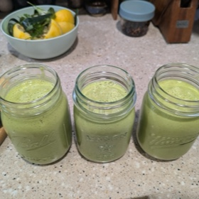

← All recipes
Chilled Cucumber Soup

Refreshing and easy and bright and flavorful and surprisingly filling. I’ve really been digging this as summer heats up here in the American South. This makes about 1.5 L.
Ingredients
- • 3 cukes, peeled and roughly chopped (~1 kg/2 lbs)
- • 1/2 c. roughly chopped fresh dill
- • 1/2 c. roughly chopped fresh parsley
- • 1/2 c. fresh mint leaves
- • 1/4 c. tahini
- • 1/4 c. extra virgin olive oil
- • 2 cloves garlic, smashed
- • zest and juice of 2 lemons
- • 2 tsp kosher salt
- • 1 tsp freshly ground black pepper
- • (optional) 1/2 tsp. Aleppo pepper flakes, or other medium-hot red chili flakes
- • 1 c. ice cubes
Directions
- Combine everything in a large blender (put the cukes in first and the ice cubes in last). Blend on medium high until smooth, about 2 minutes. If you’re unsure about the salt, start with 1 tsp then taste after blending and add more as needed. It’s a little frothy at first which I don’t mind but my wife doesn’t love. It settles down in the fridge over night, though.
- Optional: garnish it with salted and toasted pumpkin seeds, a drizzle of nice olive oil, a pinch of more fresh herbs (the same ones in the soup), finely diced cucumber and tomato, and a quick twist of the pepper grinder.